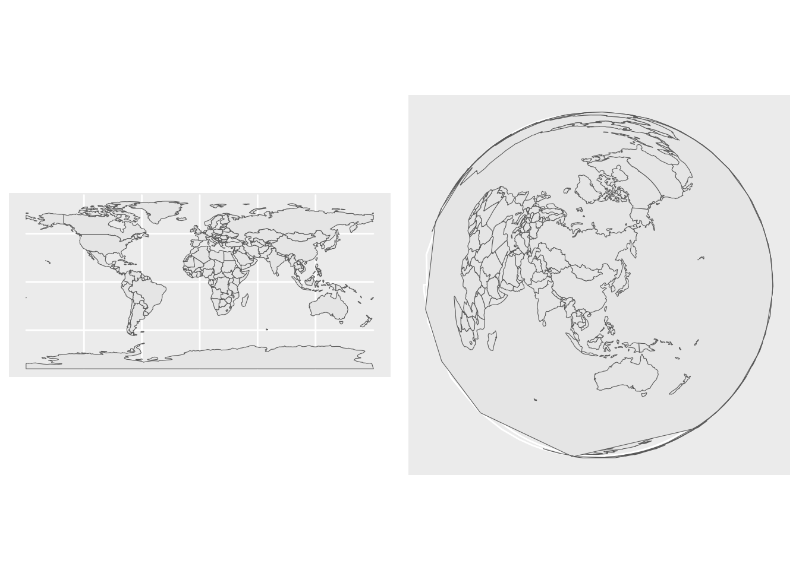

Chapitre 8 Les reprojections
Dans ce chapitre, nous allons utiliser les librairies suivantes.
# CRAN
library(cowplot)
library(mapview)
library(sf)
library(tidyverse)
library(tmap)Pour rappel, il existe deux types de CRS, les CRS géographiques (longitude/latitude avec pour unité de compte des degrés) et les CRS projetés (avec un datum et une unité en mètre par exemple).
Autrefois, la plupart des fonctions de sf présupposaient de travailler avec un CRS projeté, car les fonctions de GEOS sur lesquelles elles se basent, le nécessitaient aussi.
8.1 Un premier exemple de reprojection
Prenons les coordonnées de Nantes en WGS 84:
nantes <- data.frame(lon = -1.553621, lat = 47.218371) %>%
st_as_sf(coords = c("lon", "lat")) %>%
st_set_crs(4326)On peut visualiser nos données
mapview(nantes)st_is_longlat() est une fonction de sf qui permet de faire un test sur la famille de CRS à laquelle on a affaire.
st_is_longlat(nantes)[1] TRUEEssayons de créer un buffer de 1 km autour de Nantes.
nantes_buffer <- st_buffer(nantes, dist = 1000)
mapview(list(nantes, nantes_buffer))Le buffer est pixelisé en longitude / latitude.
Tentons une reprojection. La fonction permettant une reprojection est st_transform().
On va ici passer en Lambert 93 nos données.
nantes_proj <- st_transform(nantes, 2154)Le CRS lambert 93 est bien un CRS projeté :
st_is_longlat(nantes_proj)[1] FALSEnantes_proj_buffer <- st_buffer(nantes_proj, dist = 1000)
mapview(list(nantes_proj, nantes_proj_buffer))Les contours du buffer sont cette fois plus nets, également les mesures de surfaces sont plus précises en utilisant un crs projeté, adapté à la zone observée.
st_area(nantes_buffer)3185131 [m^2]st_area(nantes_proj_buffer)3140157 [m^2]pi*1000^2[1] 31415938.2 Quand reprojeter ?
Quelques cas usuels qui peuvent vous amener à reprojeter vos données :
la manipulation de données fournies dans des CRS différents
l’usage du package leaflet impose des données spécifiées en WGS 84
le besoin de visualiser vos données suivant la conversion de certaines propriétés des objets à la surface de la terre.
l’usage de fonctions recommandant d’utiliser des CRS projetés (comme
st_buffer(),st_area()ci-dessus)
Un exemple d’usage : la distance de Rennes à Nantes
Prenons les coordonnées WGS 84 de Rennes
rennes <- data.frame(lon = -1.6777926, lat = 48.117266) %>%
st_as_sf(coords = c("lon", "lat")) %>%
st_set_crs(4326)mapview(rennes)Tentons de calculer la distance de Rennes à Nantes.
Avec la données en Lambert 93, la fonction st_distance() renvoie un message d’erreur.
st_distance(rennes, nantes_proj)Error in st_distance(rennes, nantes_proj): st_crs(x) == st_crs(y) is not TRUEAvec la données en WGS 84, la fonction st_distance() renvoie bien un résultat.
st_distance(rennes, nantes)Units: [m]
[,1]
[1,] 100384.2Avec la données en Lambert 93, la fonction st_distance() renvoie un résultat plus précis :
st_distance(rennes %>% st_transform(2154), nantes_proj)Units: [m]
[,1]
[1,] 100302.78.3 Quel CRS utiliser ?
A cette question, il y a rarement une seule bonne réponse.
En ce qui concerne les CRS géométriques, le plus simple est d’utiliser le WGS 84 (EPSG 4326), qui est de loin le plus populaire, avec lequel beaucoup de données sont fournies.
En ce qui concerne les CRS projetés, il existe des CRS officiels à utiliser préférentiellement pour les données françaises. En métropole, on utilise le Lambert 93 (EPSG 2154). Pour les DROM, on utilise les CRS :
- RGAF09 / UTM zone 20N, code EPSG 5490, pour les Antilles françaises,
- RGFG95 / UTM zone 22N, code EPSG 2972, pour la Guyane,
- RGR92 / UTM zone 40S, code EPSG 2975, pour la Réunion,
- RGM04 / UTM zone 38S, code EPSG 4471, pour Mayotte.
Ensuite votre choix va dépendre des propriétés que vous souhaitez conserver.
8.4 Comment projeter ?
8.4.1 Projeter des vecteurs
Reprojeter des données vecteur se fait à l’aide de la fonction
st_transform(), que nous avons vue précédemment.8.4.2 Modifier la projection d’une carte.
Parfois on souhaite pouvoir aller plus loin dans les reprojections, en adaptant le centre de la projection, pour cela on peut utiliser une
proj4stringad hoc.Pour cela, on va modifier l’argument
+projde notre crs avecst_transform.Tentons par exemple de reprojeter notre carte du globe en utilisant la projection azimutale équivalente de Lambert, centrée sur Pékin.
Le paramètre
+proj=laeapermet de redéfinir la projection, les paramètres+lon_0etlat_0permettent de définir le centre de la projection.x_0ety_0définissent le centre du plan pour les coordonnées.Qu’est ce qui a changé entre nos deux cartes ?
